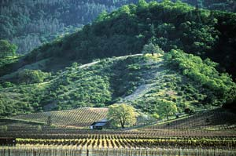
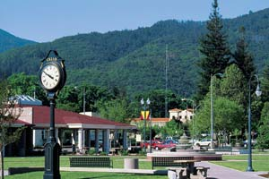

Endowed with ecological wealth in the form of a mild climate, fertile soil, and surrounding forests of oak and some remaining redwood, Ukiah and Mendocino County are a mecca for all things sustainable. Ukiah is the home of the first certified organic brewpub, Ukiah Brewing Co., and the area also boasts more than 20 organic wineries, including Frey and Fetzer. Mendocino was the first county in the United States to host a community supported agriculture farm, and the first county to ban the use of genetically modified organisms in agriculture. John Schaeffer, founder of Gaiam Real Goods, a major vendor of renewable energy technology, sold the first retail solar photovoltaic panel in the United States from the Real Goods store near Ukiah.
The county also is active in the re-localization movement. The mission statement for GULP (Greater Ukiah Localization Project) is “to engage all residents of the Upper Russian River Watershed to ensure local sources of food, water, energy, and the basic physical and spiritual needs of our communities by co-creating vibrant, self-reliant, local economies.”
Ukiah’s community culture is about being local, not just buying local. Dave Smith, owner of Mulligan books and retired partner of Smith and Hawken, is a cultural and political fixture in Ukiah. To stimulate more rooftop solar energy installations, Smith circulated a petition titled “Let’s Solarize Our Village.” Many residents (mostly in the surrounding hills) already have installed solar, and with attractive state and utility rebates and federal tax credits, Smith thinks many more will follow. Currently, the Ukiah Municipal Utility acquires more than half of its electricity from renewable sources such as geothermal, hydroelectric, wind and biomass.
Do you live in Ukiah? Have you visited? Please post your comments below.
Population: 15,580
Climate: Mild in general; warm summer afternoons buffered by coastal breezes. January average temperature: 45 degrees. July average: 73 degrees.
Median House Value: $330,000
Natural Assets: Elevation: 615 feet. Within an hour of the Pacific coast, and near the virgin redwoods of Montgomery Woods State Reserve, “one of the few remaining redwood groves you can’t drive through.”
Sustainable Initiatives: Local activism, renewable energy, drafting of a new comprehensive plan for Ukiah.
|
 TOM LIDEN Vineyards and renewable energy are two things you’ll find in Ukiah. |
 TOM LIDEN Ukiah Plaza, nestled in the hills of Mendocino county. |
|